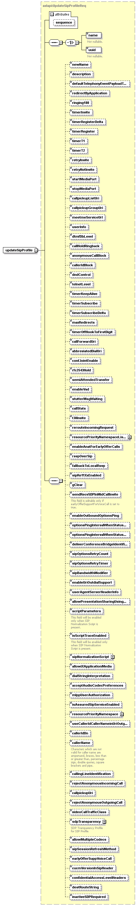

element
updateSipProfile
diagram

namespace
http://www.cisco.com/AXL/API/10.5
type
axlapi:UpdateSipProfileReq
properties
content
complex
children
name
uuid
newName
description
defaultTelephonyEventPayloadType
redirectByApplication
ringing180
timerInvite
timerRegisterDelta
timerRegister
timerT1
timerT2
retryInvite
retryNotInvite
startMediaPort
stopMediaPort
callpickupListUri
callpickupGroupUri
meetmeServiceUrl
userInfo
dtmfDbLevel
callHoldRingback
anonymousCallBlock
callerIdBlock
dndControl
telnetLevel
timerKeepAlive
timerSubscribe
timerSubscribeDelta
maxRedirects
timerOffHookToFirstDigit
callForwardUri
abbreviatedDialUri
confJointEnable
rfc2543Hold
semiAttendedTransfer
enableVad
stutterMsgWaiting
callStats
t38Invite
rerouteIncomingRequest
resourcePriorityNamespaceListName
enableAnatForEarlyOfferCalls
rsvpOverSip
fallbackToLocalRsvp
sipRe11XxEnabled
gClear
sendRecvSDPInMidCallInvite
enableOutboundOptionsPing
optionsPingIntervalWhenStatusOK
optionsPingIntervalWhenStatusNotOK
deliverConferenceBridgeIdentifier
sipOptionsRetryCount
sipOptionsRetryTimer
sipBandwidthModifier
enableUriOutdialSupport
userAgentServerHeaderInfo
allowPresentationSharingUsingBfcp
scriptParameters
isScriptTraceEnabled
sipNormalizationScript
allowiXApplicationMedia
dialStringInterpretation
acceptAudioCodecPreferences
mlppUserAuthorization
isAssuredSipServiceEnabled
resourcePriorityNamespace
useCallerIdCallerNameinUriOutgoingRequest
callerIdDn
callerName
callingLineIdentification
rejectAnonymousIncomingCall
callpickupUri
rejectAnonymousOutgoingCall
videoCallTrafficClass
sdpTransparency
allowMultipleCodecs
sipSessionRefreshMethod
earlyOfferSuppVoiceCall
cucmVersionInSipHeader
confidentialAccessLevelHeaders
destRouteString
inactiveSDPRequired
attributes
Name
Type
Use
Default
Fixed
Annotation
sequence
xsd:unsignedLong
optional
source
<
xsd:element
name
=
"updateSipProfile
"
type
=
"axlapi:UpdateSipProfileReq
"/>
XML Schema documentation generated by
XMLSpy
Schema Editor
http://www.altova.com/xmlspy